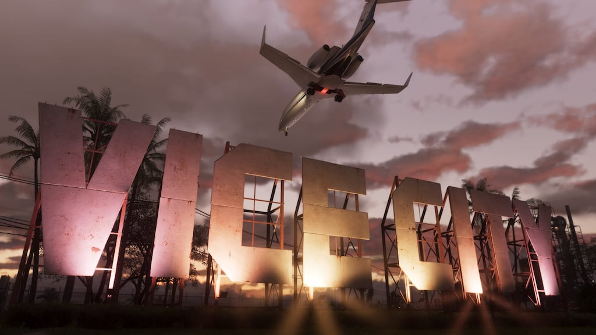

Luzes e litoral
Vice City
Vice City em um dos registros da galeria oficial de GTA VI.
Consultar imagens oficiais →O que foi apresentado oficialmente, onde encontrar os materiais e como acompanhar o jogo com a comunidade.
Datas e disponibilidade podem mudar. Confira a página oficial do jogo antes de comprar ou planejar o lançamento.
Depois de um trabalho que sai do controle, Jason e Lucia se veem envolvidos em uma conspiração criminosa por Leonida. A parceria entre os dois é central para enfrentar o que vem pela frente.
A apresentação oficial estabelece o ponto de partida. Este guia não completa lacunas da trama com teorias e não antecipa acontecimentos além do material divulgado.
Ler os perfis dos protagonistas →Fonte: sinopse oficial do jogo.
Lucia e Jason conduzem a história. A Rockstar também apresentou Cal Hampton, Boobie Ike, Dre’Quan Priest, Real Dimez, Raul Bautista e Brian Heder. Os perfis de apresentação estão reunidos na seção de personagens do portal.
Os nomes abaixo identificam locais na galeria oficial. As descrições são uma leitura das imagens divulgadas, sem atribuir missões, fronteiras ou dimensões que não foram confirmadas.

Vice City em um dos registros da galeria oficial de GTA VI.
Consultar imagens oficiais →
Ilhas, água e estradas costeiras nos registros oficiais.
Consultar imagens oficiais →
Um dos cenários identificados na galeria de Leonida.
Consultar imagens oficiais →
Vegetação e áreas alagadas contrastam com os cenários urbanos.
Consultar imagens oficiais →
Outra região apresentada na coleção oficial de imagens.
Consultar imagens oficiais →
Paisagens naturais do Mount Kalaga National Park na galeria oficial.
Consultar imagens oficiais →A galeria oficial de vídeos reúne Trailer 1, Trailer 2, o trailer de lançamento, An Extended Look e o material de pré-carregamento. Há também clipes de personagens para explorar as apresentações individuais.
Para observar o cenário, a galeria de imagens permite percorrer capturas identificadas por região. A área de artes e wallpapers reúne materiais promocionais em diferentes formatos.
A página oficial consultada informa 19 de novembro de 2026. Acompanhe a Rockstar para eventuais mudanças de data.
PlayStation 5 e Xbox Series X|S aparecem na apresentação oficial consultada. Verifique a loja da sua plataforma para disponibilidade e condições.
A página oficial consultada não lista PC entre as plataformas de lançamento. O portal não vai atribuir uma data ou requisitos de computador sem uma confirmação da Rockstar.
A ambientação anunciada é Leonida, com Vice City e outros locais apresentados na galeria oficial. O portal organiza essas referências sem tratar teorias de fãs como mapa confirmado.
A área Missões está preparada para receber guias revisados. Novas entradas são publicadas pela administração com uma fonte; o portal não preenche o catálogo com nomes ou recompensas inventados.
Entre na conta, abra a área Missões e marque uma entrada como concluída. O progresso fica vinculado à sua conta e pode ser consultado ao entrar em outro aparelho.
A leitura é aberta. Para criar tópicos, responder e enviar denúncias, entre com sua conta Google e escolha um apelido público.
Tópicos e missões sinalizados como spoiler ficam recolhidos até você revelar o conteúdo. Ao publicar no fórum, marque a opção de spoiler quando a mensagem expuser acontecimentos da história.
Não. Central GTA 6 é um projeto independente de fãs. A Rockstar Games e a Take-Two Interactive são titulares das marcas e dos materiais oficiais usados com atribuição.
Não. Materiais oficiais ficam identificados e vinculados à fonte. Teorias podem ser discutidas na comunidade, com a devida identificação e respeito às regras.
O portal é desenvolvido para celulares, tablets e computadores. O conteúdo editorial pode ser lido sem conta; as funções de comunidade usam login e conexão com o servidor.
Comece pelo Newswire e pelas galerias da Rockstar. A seleção do portal aponta para essas publicações, e as páginas editoriais devem ser revistas quando surgirem novos anúncios.
Este guia reúne uma síntese editorial em português. Informações de lançamento e plataformas vêm da página oficial; o resumo de história segue a sinopse divulgada; nomes de personagens e regiões acompanham as apresentações e galerias da Rockstar.
Revisão editorial: 14/11/2026. Imagens: Rockstar Games. Textos e identidade do portal: Central GTA 6.
Levar a conversa ao fórum →